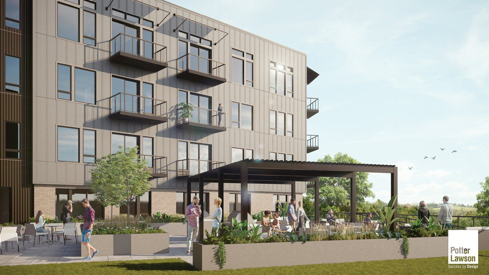
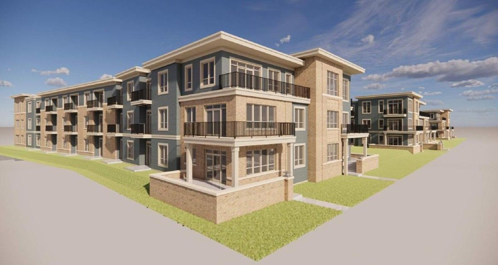
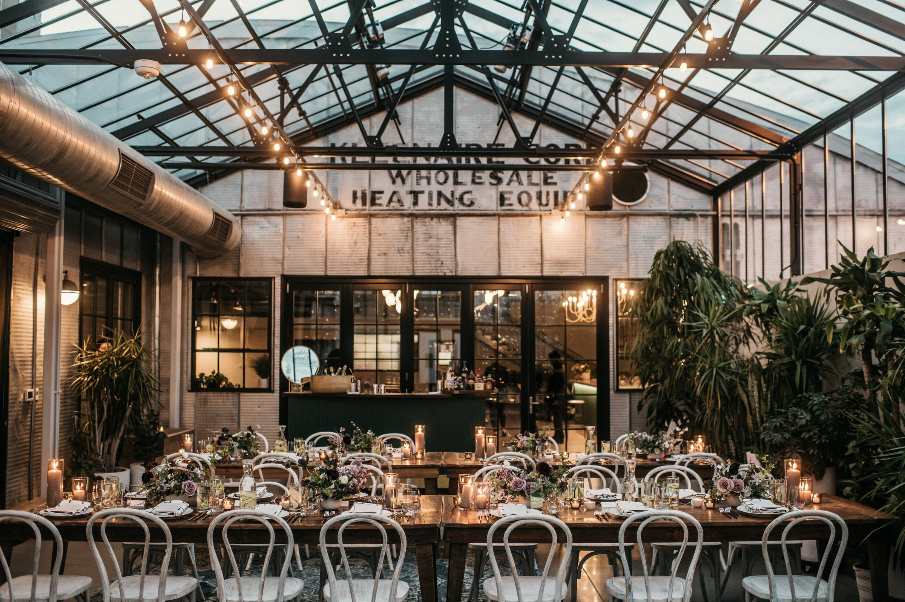
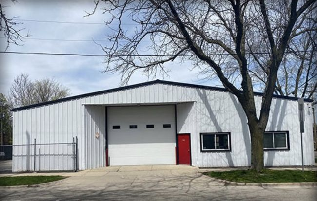
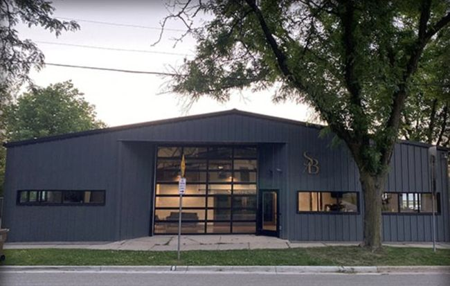
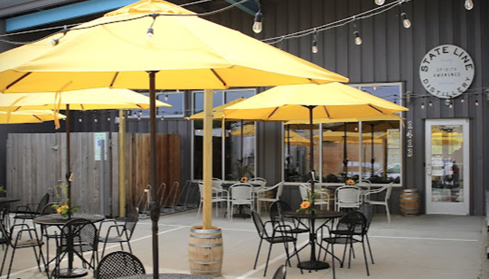

Projects
Five projects. All completed.
Two apartment communities built with Stone House Development, and three older industrial properties given new uses.

Starkweather Place
- 112
- Apartments
- 4
- Stories
- 2024
- Opened

Trader’s Way
- 144
- Apartments
- 3
- Stories
- 2026
- Opened

The Tinsmith
- 9,000
- SF, approx.
- 2
- Warehouses
- 2020
- Opened

Before
After210 S Dickinson StreetStephan & Brady
- 6,158
- SF
- 1967
- Built
- 2020
- Delivered

Northern Court
- 12,000
- SF, approx.
- 2
- Buildings
- 3
- Tenants
Project map